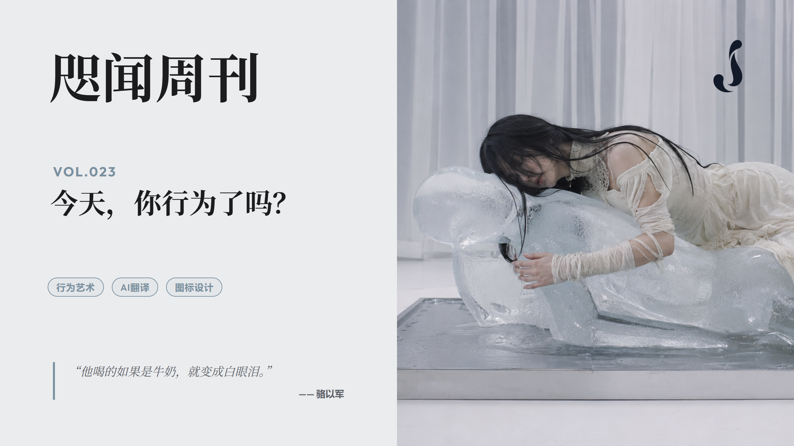
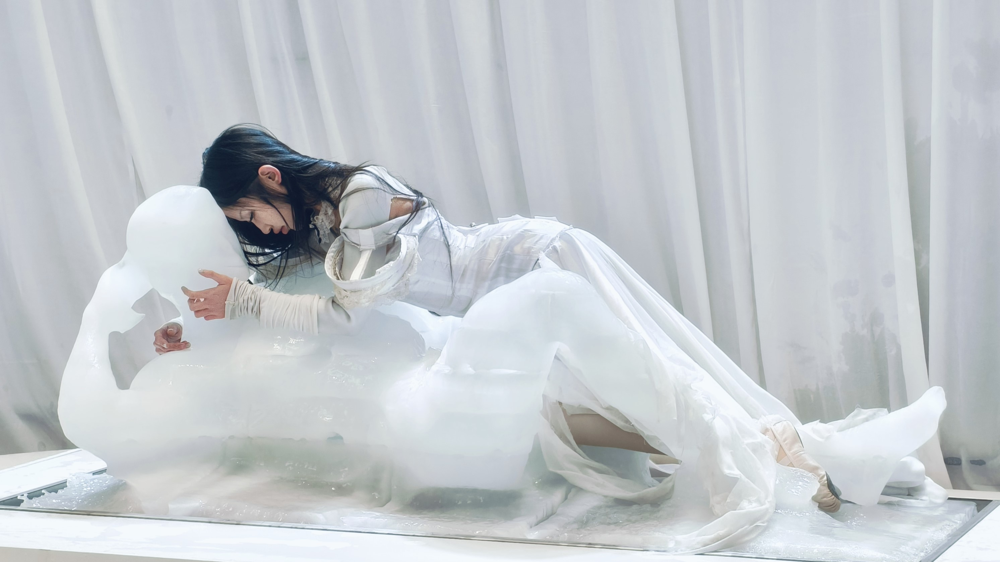
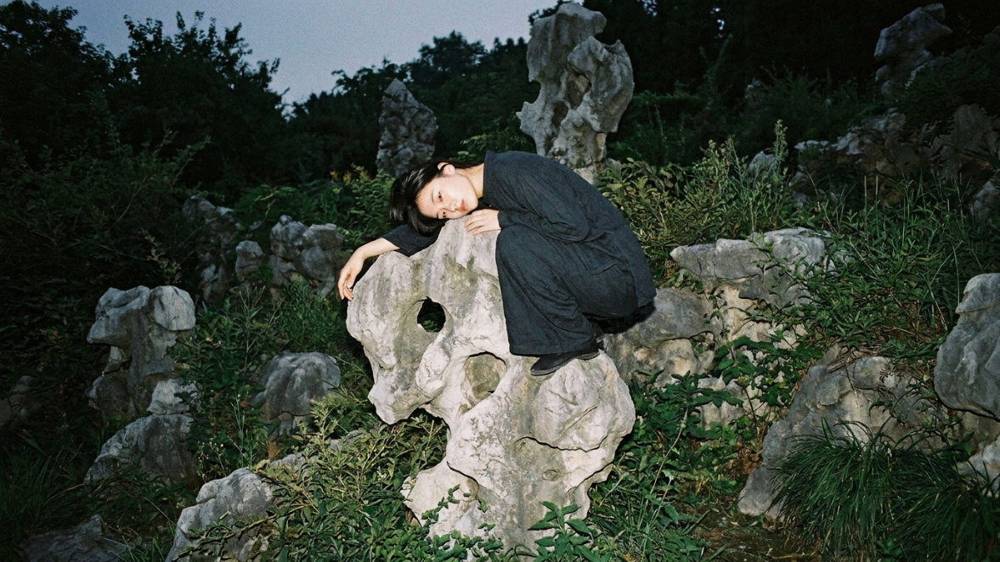
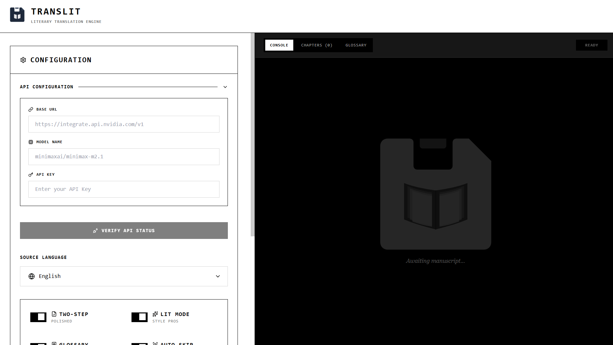
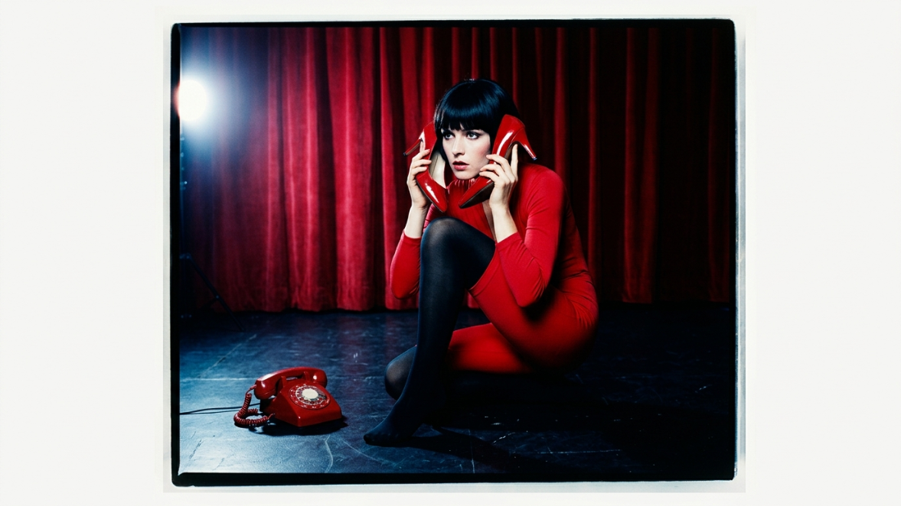

“他喝的如果是牛奶，就变成白眼泪。”
——骆以军
✍️ 卷首语
两个月前，我在一个售楼处看到现场的行为艺术。
艺术家李香凝环抱着冰雕（Made in Heaven？），可能是想将“他”完全融化。

“行为”时有休息，休息的时候幕会拉上，让人缓一缓。
这个“行为”还可以接受，我接受不了身上插几根箭那种更让身体受苦的表演。总让我想起二人转，或者某些杂技团的表演。
我想到，骆以军对二人转演员挤出牛奶眼泪的“行为”，甚至都发出了顿悟般的叙述：
他不像NBA那些球员，他们这些人平常在操练着自己神一般的技艺时，也是承受着不可思议的体能上的痛苦，承受那些压力训练自己，才能在赛场上表现得像神一样。但是他们这一套通过身体上苦练与折磨练出来的技艺，可以在资本主义金字塔的最顶端作为一种闪闪发光的表演，可以得到非常好的营生和非常大的利益。
在中国东北某个二人转的场子，我们看到的这个侏儒，他一定是承受了同等的不可思议的操练，一定是重复地练习，从鼻子喝水，从眼角流出来。他喝的如果是牛奶，就变成白眼泪；他喝的如果是黑墨水，就变成黑眼泪；他喝的如果是红墨水，就变成血泪。你可以想象那个场面有多恐怖。
于是，有了行为，又有了阐释，“白眼泪”也堪称行为艺术了吧。
今天，你行为了吗？
🎛️ 操作台

📖 术语表
重新思考了 TransLit 的设计思路。
我宁愿放弃并行翻译，也不想先跑一遍全文以获取完整术语表。这或许是因为我希望尽可能节省 Token（胜过节省时间？）。
于是我重新考虑了之前的术语表清理流程，看上去还是稍显繁琐（如图）。
新的思路取消了调用 AI 来审查新增术语表的机制，只保留了检查后文是否出现的简单过滤。并且在翻译某一分片前，只抽取分片内出现的术语内容，可以进一步削减翻译开销。
新的版本放在 GitHub 仓库—— TransLit，同时部署在 Vercel，这是一个只能调用第三方 API Key 的版本。
🎨 图标设计（续）
这是 TransLit LOGO 的最初版本，是 Gemini 写前端的同时完成的：
因为只是一个小图标，所以放弃了其他细节较多的方案，只是在上述版本基础上微调。
提示词为：
A simple black glyph icon of a floppy disk with a bold white book pictogram in the center. Extreme minimalism, flat 2D vector logo, thick lines, highly simplified silhouette, pure black and white, high contrast. --no textures, fine lines, tiny details, gradients, shading, gray, 3D
使用 Flow 中的 Nano Banana 绘制，我选了这一张：
再增加一点细节就是目前使用的版本了：
前端设计也有升级，现在是墨水屏风格：

⚡ 闪念集

“你爱玩纯色拼图，我也爱玩纯色魔方。”
《李诞工作手册》里提到过，《吐槽大会》没有综艺花字，“当时我坚持这样做节目的原因很简单：美式喜剧节目就是这样的，以编剧为核心的节目就是这样的，脱口秀的正道就该是这样的。”但转念一想，可能是英文不适合做成花字，就像不适合做成弹幕一样。
热锅凉油上的蚂蚁。
社交媒体，精神疾病的传播媒介之一。
“我这点情操都让你们给陶冶了！”